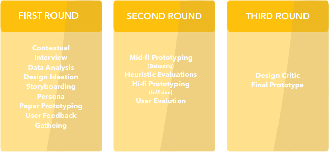
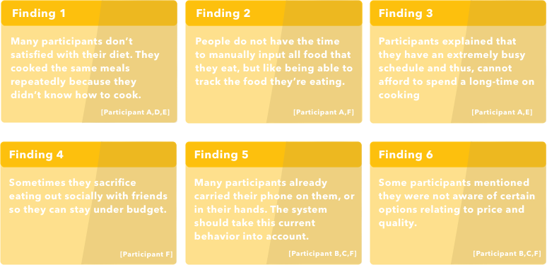
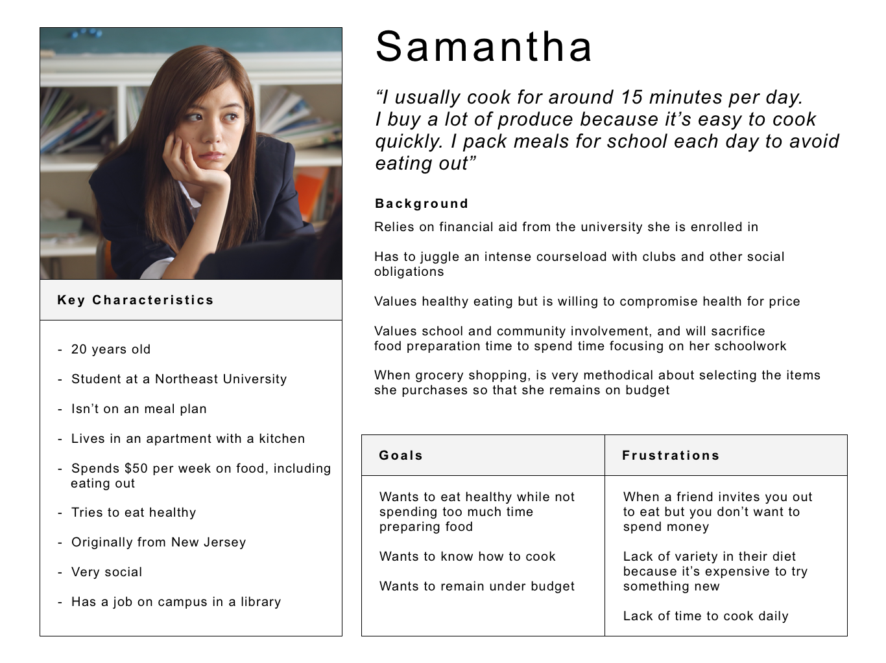

EATR
a Mobile App Designed for Promoting Healthy Eating Through Engaging Communities
ABOUT
Planning and budgeting for meals can be a huge challenge for low-income college students. Oftentimes, given a strict budget, students will have to make compromises. Oftentimes, this means sacrificing healthy foods for cheaper alternatives, or skipping expensive social events like group dinners.
To help users avoid such sacrifices, we developed Eatr, an application geared towards helping users quickly find cheap and healthy recipes, and connecting users with peers to help them cook together. Our ultimate goal is to foster communities that promote and celebrate healthy eating.In this project, we followed the guildeline of 2018 CHI design competition. This project is focusing on ‘Engaging Communities’: use human-centred design approaches to develop a new way to support, empower, or change the behaviour of a group around a shared area of interest.
During the design process, we went through three rounds of iteration.
First Round Of Iteration
Contextual Interview and Data Synthesize
In the first round of iteration, we did 5 contextual interview and gathered 57 effective surveys . We mainly used hierarchical model and affinity diagrams to synthesize our data.


Persona
Based on our interview participants’ goals, behaviors, frustrations,and backgrounds to create a user we’re designing for. Samantha, our hypothetical user, is a typicaluniversity student at a northeastern college where she is juggling an intense course load and manysocial obligations.
Design Ideation
Based on the findings, each team member individually brainstormed 20 distinctly different design solutions. We speed dating all ideas with our user to compare and combine the best ones and create our initial design.

{kind=link}
{kind=link}
{kind=link}
{kind=link}
Paper Prototyping
Our initial design is a mobile application that allows users to post and search for recipes and cooking/ shopping advice. Additionally it allows user to sign up or host ‘dinners’ which allows for interactive cooking. I made the paper prototyping for our design.
{kind=link}
{kind=link}
{kind=link}
{kind=link}
User Feedback
We invited three students to get user feedback about Eatr. All were students at Cornell who cooked for themselves on a low budget. We asked them to explore about the prototype and interviewed them with some questions. In sum, we took away from clear lessons that will be ideated into future design proposals, chiefly that our design must clearly indicate certain features that were includes but hard to access. This feedback was greatly appreciated and directly inform following design iterations to better serve the user’s needs/goals.

Second Round Of Iteration
Mid-fi Prototype
After gathering the user feedback, our group developed a mid-fidelity digital prototype using Balsamiq.
Check the Interactive Balasamiq prototype here.
{kind=link}
{kind=link}
{kind=link}
{kind=link}
Heuristic Evaluation
After each design iteration we conducted a user evaluation to fix user frustrations with the UI. For our mid-fidelity prototype our group conducted a heuristic evaluation in accordance with Nielsen’s guidelines. Some of the changes we decided to iterate on included: improving the visibility of the system status in the menu bar, incorporating a unified aesthetic and minimalist design, and allowing for better error prevention, and re-working the information architecture when adding posts.
{kind=link}
Hi-Fi prototype
Finally, our group formalized all of our user feedback and heuristic evaluation findings into a coherent high-fidelity prototype which was created using the Sketch and InVision platforms. Besides the user experience, this prorotype also focused on the visual elements of the application.
User Evaluation
After creating out Invision Prototype, we brought our designs back to users. We conducted a second set of user testing session, and developed the following key findings based on feedback from our user base:
- Users wanted to learn more about events and posts, and expected to be able to click on an event or post, similar to a recipe
- Users expected to be able to able to edit posts once they posted something, not just delate and read only
- Many users struggled when trying to remove themselves from an event
- Many users did not realize if the search function was working
- Users of the general newsfeed were confused as to whether they were looking at a recipe, event, or general post.
Thus, in our final design iterations we focused on improving the aforementioned user feedback critiques. We thought about the affordances our prototype allowed in each interaction.
Third Round Of Iteration
In this iteration, we came up with our final Invision prototype. It demonstrates our final design implementation based on our user-testing and evaluation critiques..
{kind=link}
We set out to analyze the problems facing college students on a budget. We found that they face two major frustrations, 1. They cannot take risks trying complicated recipes, and 2. They often have to compromise and skip social gatherings because of the expensive costs of eating at restaurants.
We designed an application that solves these problems by leveraging the power of the community. By allowing users to share recipes on Eatr, users can find the simple recipes that fit their budgets and constraints. By using the social event posts, users can eat with peers and try new recipes without worrying about expensive costs. Through Eatr, the power of community eases the individual’s monetary struggles while strengthening social bonds.